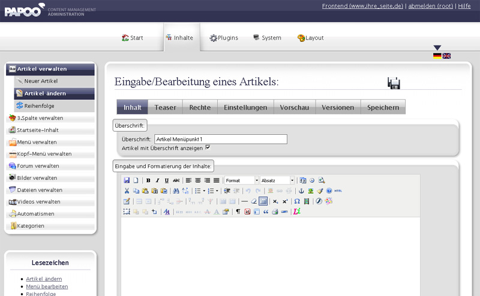

Herzlich Willkommen auf Ihrer Internetseite.
Herzlichen Glückwunsch. Die Installation Ihrer Papoo Edition hat funktioniert und Sie können das barrierefreie und suchmaschienenoptimierte CMS Papoo jetzt voll benutzen.
Mit dem CMS Papoo steht Ihnen ein vollwertiges Content Management System zur Verfügung mit dem Sie beliebig viele Inhalte erstellen und managen können.
Unser besonderer Focus liegt auf der Suchmaschinenoptimierung und der Barrierefreiheit, daher werden Sie mit dem CMS Papoo immer eine erfolgreiche und auch für behinderte Mitbürger zugängliche Webseite erstellen können.
Diesen Artikel hier z.B. können Sie unter Inhalte / Startseite-Inhalt in der Administration verändern.
Administration des CMS
Die Administration Ihrer neuen Webseite finden Sie unter ihre_seite.xy/interna/. Klicken Sie auf den Link um in die Administration zu gelangen.
{kind=link}
Sie können sich dort mit dem Benutzernamen root und dem Passwort anmelden dass Sie bei der Installation im letzten Schritt vergeben haben. Falls Sie sich nicht mehr daran erinner, führen Sie einfach den letzten Schritt /setup/start.php noch einmal durch.
Für eine größere Ansicht des Screenshots klicken Sie ihn einfach mal an. Diese Funktion können Sie übrigens in der Administration einfach per Klick einbauen.
Kostenloser Support
Wenn Sie Fragen zu Ihrem neuen Papoo System haben können Sie jederzeit in unserem Community Forum um Rat fragen. Und keine Sorge, Neulinge werden dort genauso herzlich willkommen geheißen wie die alten Hasen.
Business Support
Zusätzlich stehen wir unseren Papoo Plus, Pro und Business Kunden auch immer gerne per E-Mail oder Telefon über unsere Hotline hilfreich zur Seite.
Wenn Sie weitere Fragen haben, wie z.B. ob wir von Papoo Software ihr Design erstellen oder spezielle Anpassungen oder Funktionen programmieren können, dann kontaktieren Sie uns einfach oder rufen uns an: 0228 / 280 56 68.
Dokumentation
Eine ausführliche PDF Dokumentation finden sie auf unserer CMS Webseite, dort finden Sie auch unser Online Hilfe Forum, unsere Online Wiki Dokumentation und eine FAQ Sammlung.
Designvorlagen für Papoo
Die Grundlage des CSS für das Standard Layout ist das 960 CSS Grid System, für viele Designs benutzen wir auch das YAML Layout.
In unseren Papoo Plus, Pro und Business Versionen liefern wir mind. 30 fertige, sofort nutzbare Designvorlagen mit. Wie diese aussehen, davon können Sie sich auf unserer Webseite ein Bild machen.
Individuelle Designs für Ihre Webseite
Gerne setzen wir für Sie auch ein invididuelle Design für Sie um, wir können das für Sie erstellen mit unseren TOP Grafik Designern oder wir setzen ein erstelltest Photoshop Design oder vorhandenes Design für Sie um. Wenn Sie Fragen dazu haben, rufen Sie uns einfach an: 0228 280 56 68
Prinzipiell läßt sich nahezu jedes beliebige Design mit Papoo umsetzen. Was alles möglich ist, können Sie in unserer Referenzliste schauen mit weit mehr als 1000 ausgewählten Einträgen.
Viel Erfolg
Viel Erfolg mit Ihrem neuen Papoo CMS System
Ihr Team von Papoo Software.
- .